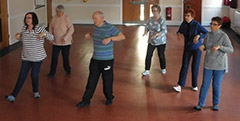
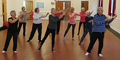
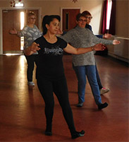

Tai Chi Class Rates
- 6 classes £42.00 (run term time).
- Please book
- New people can join at any point.


Tai Chi
Covid 19 - rules are applied to keep us safe in my in-Hall classes.
|
Day |
Class |
Time |
Venue |
|---|---|---|---|
|
Tuesdays |
Tai Chi |
11.00am |
Drayton Centre, 228 Havant Rd, PO6 2AP |
Classes run during school term time and on a skeleton basis during Summer Holidays
Please visit the Timetable / Fees page for course dates and fees.
What is Tai Chi Qigong? Qi (energy) Gong (to work)
There are many forms of Tai Chi and my aim is to deliver 18 Shibashi 1 movements as a health-promoting exercise where everyone young and old can learn to do it. Tai Chi Movements encourage the stretching and stimulation of the smaller muscles and ligaments to ensure joints are protected and the muscles build up slowly. The combination of graceful, flowing movements and deep, relaxed breathing, encourages tension held deep in the body's tissues to soften and release. Movements are performed in a sequence to ensure internal energy is pushed' through all the channels (meridians) to various organs of the body.
Do I need to be fit to do Tai Chi Qigong?
Tai Chi Qigong is for everyone and most people should be able to do it. It is ideal for inactive people and older adults wanting to raise their activity levels gently and gradually. Tai Chi Qigong movements can be adapted for people with limited movement and exercises can be adapted and followed while seated.
What are the health benefits of Tai Chi Qigong?
Tai Chi can help to reduce stress, improve balance and general mobility and increase muscle strength in the legs. Some research suggests Tai Chi can reduce the risk of falls among older adults and improve mobility in the ankle, hip and knee in people with rheumatoid arthritis (RH).